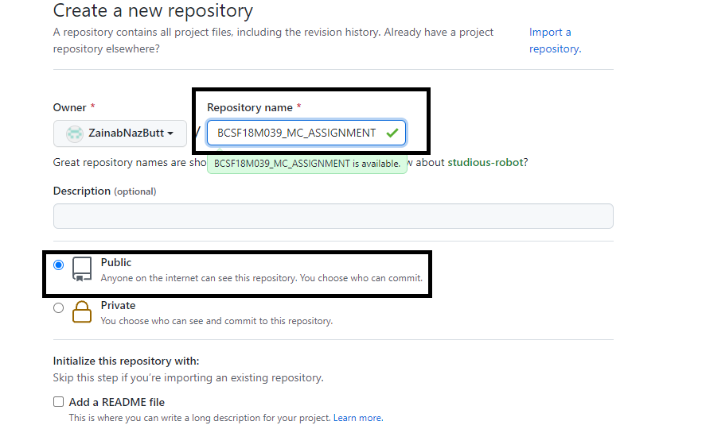
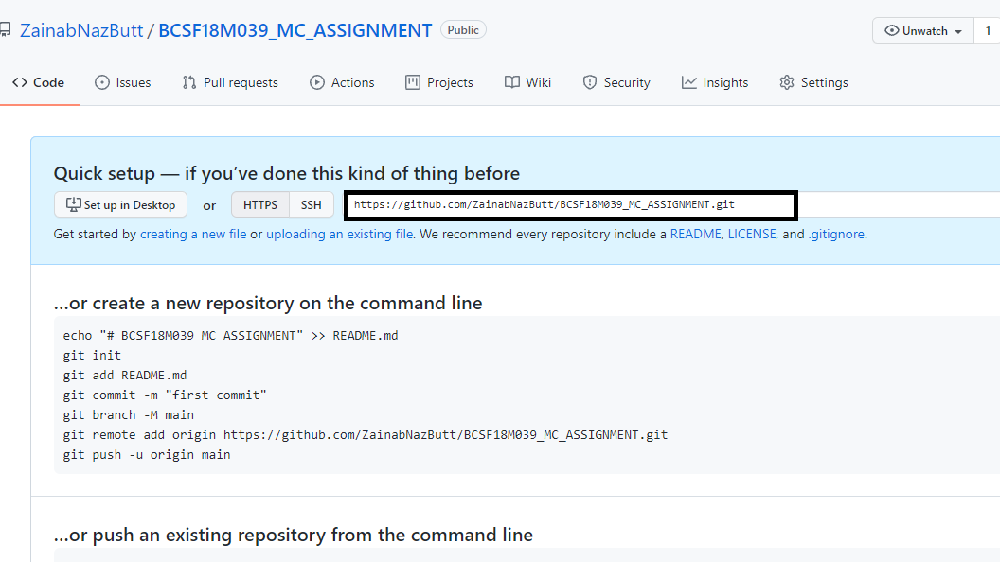
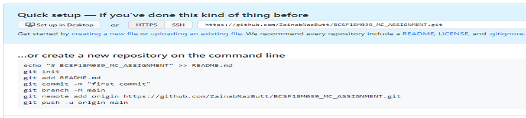
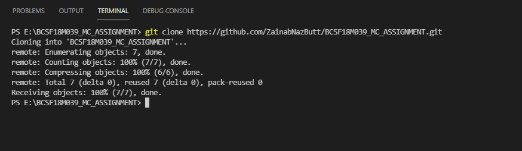

Git is a Version Control System or VCS .VCS is basically software designed to record changes within one or more files over time. It allows us to undo or to cancel all made or pending changes within one or more files. If we're working on a project with many files, VCS enables us to control the whole project. If necessary, this allows us to revert one or more files any of their previous versions or the whole project to a previous version. We can also compare changes to one file between two versions in order to see exactly what was changed in each file, when it was changed and who made the change. We can also see why the change was made.
The first two things you'll want to do are install git and create a free GitHub account.
If you only want to keep track of your code locally, you don't need to use GitHub. But if you want to work with a team, you can use GitHub to collaboratively modify the project's code. To create a new repo on GitHub, log in and go to the GitHub home page. You can find the “New repository” option under the “+” sign next to your profile picture, in the top right corner of the navbar:
After clicking the button, GitHub will ask you to name your repo and provide a brief description:
Below you can see the url of your repository:
When creating a new project on your local machine using git, you'll first create a new repository.To use git we'll be using the terminal.Use the following commands to do so:
Git Clone is primarily used to point to an existing repo and make a clone or copy of that repo at in a new directory, at another location. The original repository can be located on the local filesystem or on remote machine accessible supported protocols.
